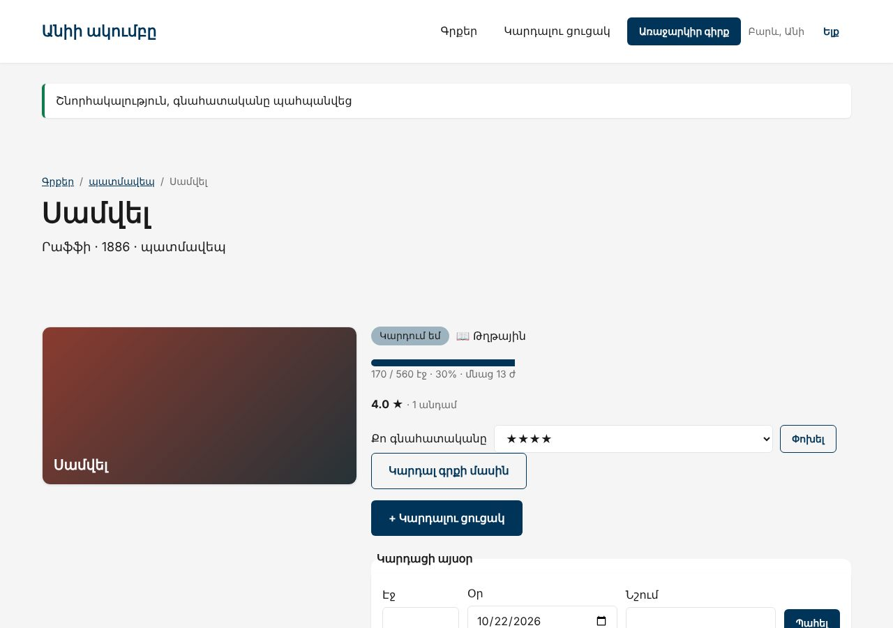

Տնային աշխատանք · PHP Դաս 22 · մինի-նախագիծ
Վերջին քայլը՝ ակումբը հրապարակվում է և դառնում պորտֆոլիոյի նախագիծ։ Ավելացնում ես մեկ ֆունկցիա, որ դասընթացում չկար՝ անդամների գնահատականներ, պատրաստում production .env-ը, DemoSeeder-ը, deploy-ի ստուգաթերթը և README-ն՝ այն կաղապարով, որ ռեկրուտերը կարդա 60 վայրկյանում։
Դաս 01–22․ ամբողջ բլոկը, .env.example, APP_DEBUG=false, DemoSeeder՝ գաղտնաբառերը .env-ից, config:cache, document root, README, GitHub պրոֆիլ։ CV-ն և հարցազրույցը՝ Դաս 23–24-ում։

Laravel-ը ինքը չի մտնում օրինակի մեջ (vendor-ը 70+ ՄԲ է)․ example/-ում են միայն այն ֆայլերը, որ դու ստեղծում կամ փոխում ես նոր նախագծում։ Պատճենիր դրանք նույն ուղիներով։
Այս ֆայլերը պատճենվել են մաքուր Laravel 12 նախագծի վրա (Fortify-ով, MariaDB-ով), կատարվել են migrate:fresh --seed և view:cache, և կայքը ստուգվել է բրաուզերում ավտոմատ թեստերով (Դաս 22-ի վերջնական վիճակը՝ 50 ստուգում՝ ֆիլտրեր, ցուցակ, ադմին, վալիդացիա, դերեր, 403/404/419, API, գնահատական)։ Նկարները վերցված են հենց այդ գործարկումից։ Քո մեքենայում միևնույն է անցիր ստուգաթերթով (բաժին 03)։
Շարունակիր Laravel նախագիծը։ Եթե բաց ես թողել նախորդ դասը, սկսիր Դաս 21-ի օրինակից՝ պատճենելով ֆայլերը նոր Laravel նախագծի վրա։
starter/README-template.md — README-ի կաղապարstarter/docs/DEPLOY.md — deploy-ի հրամանները և smoke test-ի 10 կետը| Գործարկել |
|---|
php artisan migrate && php artisan serve |
git log --all --oneline -- .env բոլոր պահոցներում․ պետք է դատարկ լինի.env.example՝ production արժեքներով, առանց գաղտնաբառերիAPP_DEBUG=false, SESSION_SECURE_COOKIE=trueratings աղյուսակ՝ UNIQUE(user_id, book_id) (տնային 2)RatingController՝ կա՞ գնահատական՝ թարմացնել, չկա՞՝ ստեղծել, միայն authuser_id-ն fillable չէ․ updateOrCreate(['user_id' => …])-ը shouldBeStrict-ով կտա MassAssignmentExceptionloadAvg('ratings', 'stars') և loadCountpublic function store(Request $request, Book $book)
{
abort_unless($book->is_active, 404);
$data = $request->validate(['stars' => ['required', 'integer', 'between:1,5']], [], ['stars' => 'գնահատականը']);
// Կա՞ արդեն՝ թարմացնում ենք, չկա՝ ստեղծում։ UNIQUE(user_id, book_id)-ը երաշխավորում է նույնը բազայում
// ⚠️ updateOrCreate(['user_id' => ...])-ը կփորձեր user_id-ն լցնել fill()-ով, իսկ այն fillable չէ (դիտավորյալ)․
// shouldBeStrict()-ով դա MassAssignmentException է։ Ուստի user_id-ն՝ ուղիղ վերագրմամբ, ինչպես role-ը (Դաս 20)
$rating = $book->ratings()->where('user_id', $request->user()->id)->first() ?? $book->ratings()->make();
$rating->user_id = $request->user()->id;
$rating->stars = $data['stars'];
$rating->save();
return redirect()->route('book.show', $book)->with('success', 'Շնորհակալություն, գնահատականը պահպանվեց');
}.env-ից, demo-ն՝ editorphp artisan db:seed --class=DemoSeeder --forcepublic/docs/DEPLOY.md-ի հրամանները և smoke test-ի 10 կետը.env-ը երբեք չի եղել պահոցում| Սխալ | Ինչպես ուղղել |
|---|---|
| Production-ում սպիտակ էջ | APP_KEY չկա․ php artisan key:generate --force |
| CSS-ը չի բեռնվում hosting-ում | APP_URL-ը սխալ է կամ document root-ը արմատն է, ոչ public/ |
/.env-ը բացվում է | Document root-ը սխալ է․ սա ամենավտանգավոր սխալն է (Դաս 22, բաժին 04) |
| Գնահատականը կրկնվում է | unique(['user_id', 'book_id']) միգրացիայում, իսկ կոնտրոլերում նախ փնտրիր անդամի գնահատականը, ոչ միշտ create |
Add fillable property [user_id] | updateOrCreate-ի առաջին զանգվածը նույնպես լցվում է fill()-ով․ user_id-ն վերագրիր ուղիղ |
Սրանք Դաս 22-ի տնային աշխատանքի կետերն են։ «մինի-նախագծում» նշվածները արդեն կատարել ես վերևի քայլերում՝ Անիի ակումբում։ Մնացածը կատարիր ՏեխնոՄարկետում, ինչպես գրված է դասում։
Mail-ով (լոկալ՝ MAIL_MAILER=log) ·
ֆիլտրեր գնի և կատեգորիայի համար՝ query string-ով ·
API փաստաթուղթ Դաս 17-ի endpoint-ների համար։ մինի-նախագծումԵրբ բաժին 03-ի բոլոր կետերը նշված են, բացիր օրինակը։ Գտիր մեկ բան, որ դու արել ես այլ կերպ, և մտածիր՝ որն է ավելի հասկանալի և ինչու։ Քո լուծումը կարող է տարբերվել և լինել ճիշտ։